Tu IDE con IA para construir más rápido
Kiro es un IDE potenciado por IA diseñado para desarrolladores. Combina un editor de código inteligente con un agente de IA que entiende tu proyecto, genera código, escribe tests y te ayuda a iterar más rápido que nunca.
Kiro Specs
Kiro Vibe
Accede a la web oficial, documentación y descarga el IDE.
kiro.dev →
Sigue estos dos ejercicios para experimentar el poder de Kiro. Abre Kiro, copia el prompt y observa cómo la IA construye por ti.
Describe lo que quieres construir en lenguaje natural. Kiro generará toda la estructura, el código y los archivos necesarios automáticamente.
Los Specs permiten planificar e implementar features de forma estructurada. Kiro genera requisitos, diseño y tareas antes de escribir una sola línea de código.
💡 Tip: Si Kiro no se abre automáticamente, descárgalo en kiro.dev e instálalo primero.
Accede al tutorial completo "Learn by Playing" desde tu móvil.
kiro.dev/docs/guides/learn-by-playing →
Aprende Kiro completando tareas reales en Spirit of Kiro, un videojuego open source construido 95% con Kiro. Arregla bugs, añade features y descubre el poder del IDE en acción.
Crea una cuenta AWS, lanza el stack con Docker Compose y verifica que el juego corre en local.
Ver guía →Configura Steering files para que Kiro entienda el proyecto y mejora la landing page del juego.
Ver guía →Al cambiar de pestaña la física se vuelve loca. ¿Puede Kiro encontrar y arreglar este bug sutil?
Ver guía →El sistema de interacciones fue "vibe coded" y la IA se olvidó algo. Kiro corrige su propio error.
Ver guía →No solo vibe coding — también vibe refactoring. Elimina duplicación de código con Kiro.
Ver guía →Una feature compleja que toca cliente y servidor. Usa Specs para planificar e implementar paso a paso.
Ver guía →Identifica trabajo repetitivo y propenso a errores. Los Agent Hooks de Kiro lo automatizan por ti.
Ver guía →Personaliza Kiro añadiendo contexto y comportamientos extra con Model Context Protocol.
Ver guía →